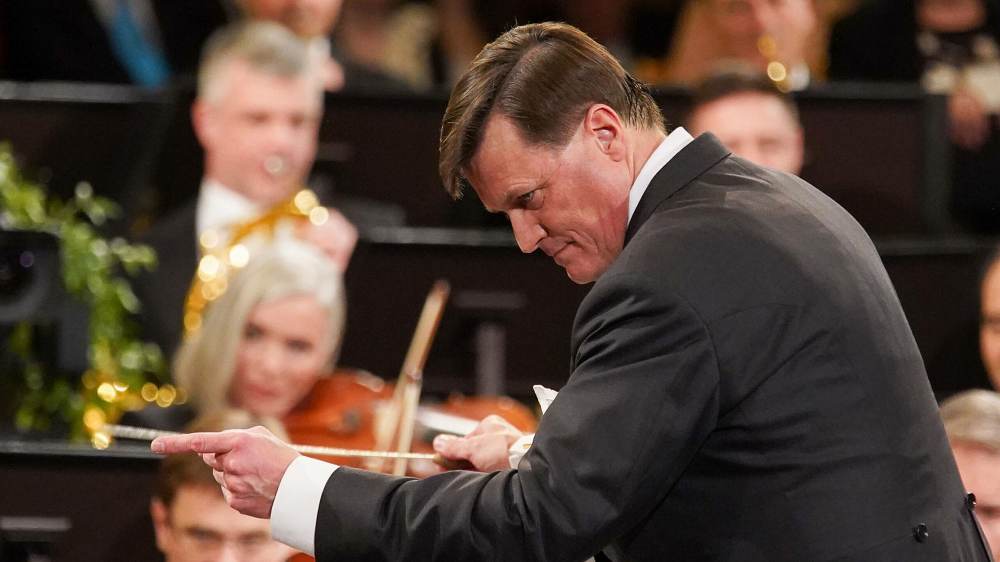

Elsa Álvarez

Viena. 18/4/26. Musikverein. R. Strauss: lieder per a orquestra. Beethoven: Simfonia núm. 6, en fa major, op. 68, “Pastoral”; Obertura Egmont, op. 84. Christian Thielemann, director. Julia Kleiter, soprano. Konstantin Krimmel, baríton. Staatskapelle Berlin.
El 18 d’abril Christian Thielemann va tornar a Viena, després de mesos de no visitar-la. D’ençà que va deixar Dresden per Berlín, ha fet menys gires, cosa que espero que adreci en un futur proper. Al capdavant de la Staatskapelle Berlin van interpretar un conjunt de lieder de Strauss, i a la segona part va arribar Beethoven, amb la Simfonia Pastoral i l’obertura Egmont.
Aquesta vegada no l’esperava amb tanta ànsia perquè feia tot just dues setmanes que l’havia vist a Berlín amb el Deutsches Requiem i Der Rosenkavalier, però cada vegada que veig Thielemann un remolí de sensacions molt intenses em corre per dins i em transforma en persona i en esperit. Cada vegada. Guardo per més endavant una anècdota que ho il·lustra.
Primer de tot, vull remarcar que anava amb frac negre. Esmento el color perquè no sempre el porta negre. El dia del Deutsches Requiem, a la Philharmonie Berlin, el duia gris. No era la primera vegada que l’hi veia gris, i sempre pensava que era un efecte òptic de la llum, però no, el frac era gris. Em penso que se’l posa per dirigir concerts a Berlín. La qüestió és que anava com un cavaller, com a mi m’agrada.
Thielemann sempre m’extasia, penso que en música és la mesura de totes les coses, però em fixo tant en cada detall que no puc evitar fixar-me en coses que pel meu gust no van ser del tot rodones. Per exemple, en els dos primers lieder de Strauss l’orquestra va tapar, primer Kleiter i després Krimmel. Vaig pensar, “la Kleiter no m’agrada tant com amb la mariscala”, però quan vaig sentir que també tapava Krimmel vaig veure que el problema era de l’orquestra, no dels cantants. Fa un mes i mig vaig veure Konstantin Krimmel al Palau fent la Passió segons sant Joan i tenia una veuarra molt potent. És clar que al Palau jo seia al primer pis al costat, gairebé a tocar dels intèrprets, mentre que ahir seia al primer pis del Musikverein al centre, que queda bastant lluny de l’escenari. A vegades no parem atenció a aquests detalls subjectius, que sovint resulten decisius en la percepció de la música.
Però a partir del tercer lied la cosa va millorar molt, i Thielemann va crear atmosfera, colors i seda, com sempre fa ell en tot el que dirigeix. La suavitat i delicadesa extrema que sempre crea és magnètica. “Morgen”, en la veu de Julia Kleiter, va ser una pedra preciosa, i el concertino, tot i que no era el de sempre, si bé al principi va sonar una mica tímid, va trenar el so del violí amb la veu de Kleiter amb una gran ductilitat. En conjunt va ser un Strauss exuberant, delicat i colorista, com només Thielemann sap dirigir.
Però el plat fort del concert va venir a la segona part, amb la Simfonia “Pastoral”. Va ser literalment una pintura feta música. Thielemann va infondre força, passió, una càrrega emocional d’una intensitat brutal a tota la simfonia, en el seu llarg devessall d’escenes de la natura. La tempesta va ser d’una violència tan garratibant que va semblar un tornado. En el segon moviment vaig notar el clarinet una mica apagat. Però Thielemann va excel·lir, com sempre, en els moviments lents, especialment en aquest Andante con molto moto. La seva manera de dirigir és tan intensa i absorbent que a mi em submergeix completament dins la música, és un remolí de passió estètica que se m’endú. És d’una intensitat brutal, com cap altre, ni tan sols Orozco-Estrada.
Després de la música jo estava en un estat gairebé d’alienació mental, i aleshores vaig sentir com la gent començava a aplaudir tímidament i vaig pensar “com pot ser que al Musikverein el públic aplaudeixi fora de temps?” I és que la simfonia ja s’havia acabat i jo no me n’havia adonat, sumida com estava dins la música! Aquest és el poder que Thielemann té sobre meu.
Mentre l’allau d’aplaudiments continuava, Thielemann va arrencar Egmont, amb el mateix ardor guerrer i victoriós amb el qual va dirigir Coriolà fa quatre anys. Va ser un Egmont heroic, pletòric, èpic, però vaig notar que la Staatskapelle Berlin no té –encara– l’extrema finor que té la Staatskapelle Dresden. La meva teoria és que Thielemann fa poc que hi és i està treballant per donar la seva forma a l’orquestra.
Després d’un concert èpic carregat d’adrenalina i d’intensitat, va sortir a saludar sol quatre vegades. Massa poques.